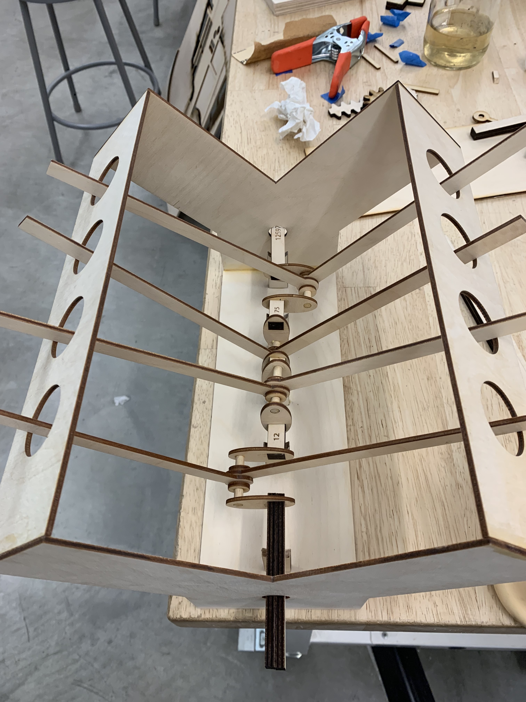
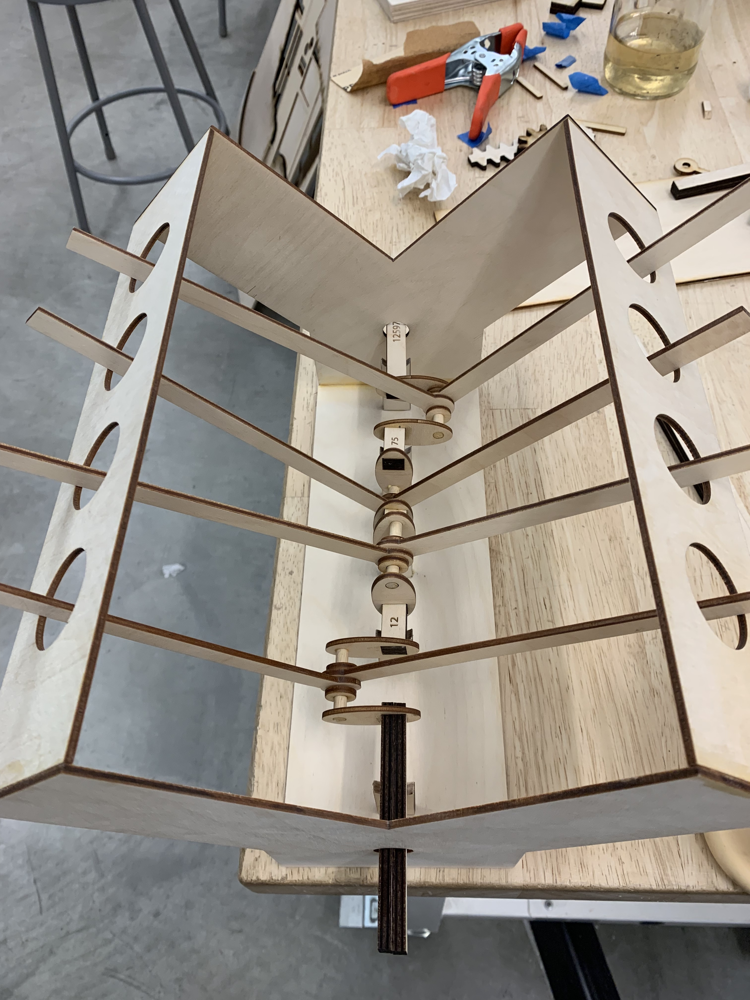

Sentry
This group project spawned from a prompt to create a novel ‘protest object.’

After an initial ambition vs. feasibility assessment I decided to pursue a flat four engine:
a single, straight crankshaft with four evenly-spaced, radially-offset cams to push corresponding connecting rods
vertically upward.
Upon reviewing alumni projects, I reconsidered my time commitment to the project, and scaled my ambition, aiming for a full crossplane
V8 engine. I knew from the get-go that the toughest part of modeling any V engine (where two banks of cylinders
are oriented at a 90° angle) would be the crankshaft.

For this project, I didn’t use any CAD software. I designed parts directly in Illustrator and validated them with the laser cutter.
This was certainly risky, but I think the correct approach for a project such as this with
so many tiny component interactions that never scale as expected.

I decided to pursue a square-shaped crank in order to eliminate any slip. I cut and sanded uniform
segments of 1/8” wooden dowels to act as my rod bearing journals, around which the connecting rods
rotated. These alternated with more square segments, my main bearing journals.

This crank is in a cross-plane configuration, meaning that a cylinder “fires” every 90° the crank
is rotated. My model has the same firing order (the order in which the cylinders fire) as a Chevy small block V8.
This group project spawned from a prompt to create a novel ‘protest object.’
After an initial ambition vs. feasibility assessment I decided to pursue a flat four engine: a single, straight crankshaft with four evenly-spaced, radially-offset cams to push corresponding connecting rods vertically upward.
Upon reviewing alumni projects, I reconsidered my time commitment to the project, and scaled my ambition, aiming for a full crossplane V8 engine. I knew from the get-go that the toughest part of modeling any V engine (where two banks of cylinders are oriented at a 90° angle) would be the crankshaft.
For this project, I didn’t use any CAD software. I designed parts directly in Illustrator and validated them with the laser cutter. This was certainly risky, but I think the correct approach for a project such as this with so many tiny component interactions that never scale as expected.

I decided to pursue a square-shaped crank in order to eliminate any slip. I cut and sanded uniform segments of 1/8” wooden dowels to act as my rod bearing journals, around which the connecting rods rotated. These alternated with more square segments, my main bearing journals.
This crank is in a cross-plane configuration, meaning that a cylinder “fires” every 90° the crank is rotated. My model has the same firing order (the order in which the cylinders fire) as a Chevy small block V8.